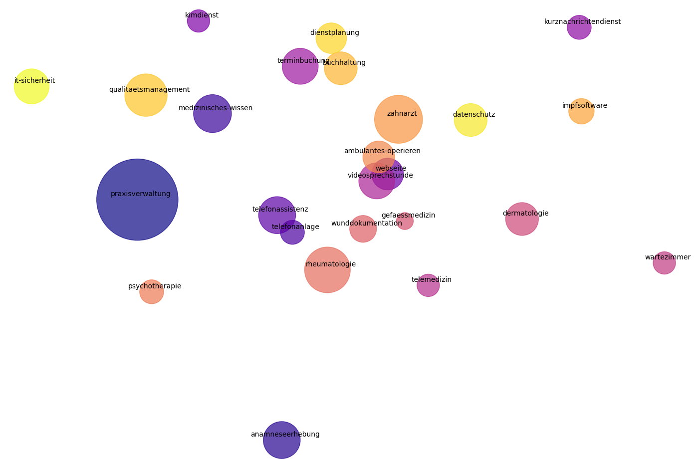

Praxis-IT
Vorwort
„Praxis-IT“ bietet eine umfassende Sammlung praxisorientierter Informationen und Tools mit dem Ziel, Theorie und Praxis zu verbinden. Sie ermöglicht es, technologische Lösungen besser zu verstehen und anzuwenden.
Digitalisierung im ambulaten Bereich: Zwischen Potenzial und Realität
Die Einführung von elektronischen Patientenakten (ePA) hat die Arbeitsweise von Arztpraxen verändert. Studien zeigen, dass ePA nicht nur die Dokumentation verbessern, sondern auch die Koordination und Kommunikation innerhalb des Gesundheitswesens erleichtern können (Neunaber und Meister 2023). Dennoch bleibt die effektive Nutzung dieser Systeme eine Herausforderung, da die Einführung oft von unzureichenden Schulungen und technologischen Hürden begleitet wird (Miller, Sim, und Newman 2004).
In fünf Primärversorgungspraxen in Manitoba wurden 57 Interviews und vier Diskussionsgruppen durchgeführt. Die Ergebnisse zeigten, dass die EPA-Nutzungsraten auf einer Skala von 0 bis 5 zwischen 2,3 und 3,0 lagen. Besonders niedrig war die Nutzung von Entscheidungsunterstützungssystemen, der Bereitstellung von Patientenzugriff auf eigene Daten und von Praxis-Reporting-Tools. Hindernisse für die vollständige Nutzung der EPA waren unter anderem Implementierungsprobleme, unzureichende eHealth-Infrastruktur, mangelndes Bewusstsein für EPA-Funktionen und schlechte Datenqualität. Viele Ärzte nutzten ihre EPA lediglich als “elektronische Papierakten” und schöpften deren Potenzial nicht aus. Die Studie empfiehlt Bildungs- und Qualitätsverbesserungsmaßnahmen, um die Datenqualität zu erhöhen und die Nutzung der EPA zu optimieren. (Price, Singer, und Kim 2013)
Die Studie “The informatics capability maturity of integrated primary care centres in Australia” untersucht, wie gut integrierte Primärversorgungszentren in Australien Informationen sammeln, verwalten und teilen sowie eHealth-Technologien implementieren. Die Ergebnisse zeigen, dass diese Zentren unterschiedliche Modelle in Bezug auf Finanzierung, Eigentum, Führung und Organisation aufweisen. Der Einsatz digitaler Werkzeuge zur Datensammlung und -nutzung variiert, wobei Probleme bei der Konnektivität und dem Fehlen technischer Standards die Datenintegration und -weitergabe erschweren. (Liaw u. a. 2017)
Die größte Entwicklung der E-Health-Reife fand zwischen 2011 und 2014 statt, wobei die Entwicklung danach fortgesetzt wurde und einige Indikatoren bereits den maximalen Nutzungsgrad erreicht haben. Die primäre Gesundheitsversorgung hinkt in der Entwicklung hinter der spezialisierten Versorgung her. Es wurden regionale Unterschiede zwischen den finnischen Krankenhausbezirken festgestellt. Die Ergebnisse verdeutlichen, dass E-Health in Finnland durch nationale Strategien und gesetzliche Änderungen kontinuierlich gefördert wurde. Einige Funktionen haben bereits eine 100%-ige Nutzung erreicht, aber es besteht noch Entwicklungspotenzial, insbesondere in der primären Gesundheitsversorgung. Die Studie untersuchte die Entwicklung der E-Health-Reife in Finnland von 2011 bis 2020, sowohl im Bereich der primären Gesundheitsversorgung als auch der spezialisierten Versorgung. Daten wurden durch webbasierte Fragebögen im Rahmen von Umfragen zur Nutzung von Informations- und Kommunikationstechnologie im finnischen Gesundheitswesen erhoben. Es wurden insgesamt 16 Indikatoren verwendet, die die Verfügbarkeit und Nutzung von elektronischen Patientenakten, Bildarchivierungssystemen, Gesundheitsinformationsaustausch und anderen wichtigen E-Health-Funktionen beschrieben. (Haverinen u. a. 2022)
Der Einsatz von Computern und spezifischen klinischen Funktionen wie Verschreibung, Medikamentenprüfung und Erstellung von Gesundheitsakten ist in fast allen europäischen Ländern in der Primärversorgung verbreitet. Jedoch bestehen erhebliche Unterschiede in der Nutzung, insbesondere in süd- und mitteleuropäischen Ländern. Es wird empfohlen verstärkte Bemühungen auf europäischer Ebene zu unternehmen, um diese Unterschiede zu verringern und die IKT-Nutzung in der Primärversorgung zu verbessern. (Rosis und Seghieri 2015)
Telemedizin in ländlichen Gebieten: Integration und Akzeptanz im Fokus
Neben ePAs haben auch weitere digitale Technologien, wie Telemedizin, die Patientenversorgung nachhaltig verändert. Die Implementierung von Telemedizinlösungen hat insbesondere in ländlichen Gebieten gezeigt, wie der Zugang zur Gesundheitsversorgung verbessert werden kann, ohne dabei die Qualität der Behandlung zu beeinträchtigen (Wilcox u. a. 2008). Diese Technologien erfordern jedoch eine sorgfältige Integration in bestehende Arbeitsprozesse, um von allen Beteiligten akzeptiert zu werden (Versluis u. a. 2020).
Die wissenschaftliche Untersuchung “The Empirical Foundations of Telemedicine Interventions in Primary Care” analysiert die Wirksamkeit von Telemedizin im Bereich der Primärversorgung. Die Ergebnisse basieren auf einer systematischen Überprüfung von Studien, die zwischen 2005 und 2015 veröffentlicht wurden. Von den anfänglich 2.308 identifizierten Artikeln erfüllten 86 die Einschlusskriterien. Die Mehrheit der Studien unterstützt die Machbarkeit und Akzeptanz von Telemedizin in der Primärversorgung. Allerdings variieren die Ergebnisse je nach demografischen Faktoren wie Geschlecht, Alter und sozioökonomischem Status. Patienten zeigen oft eine höhere Akzeptanz gegenüber Gesundheitsdienstleistern. Die Daten zu Zwischenzielen sind begrenzt, deuten jedoch darauf hin, dass Telemedizininterventionen in der Regel mindestens genauso effektiv sind wie traditionelle Versorgung. Kostenanalysen variieren, aber Telemedizin in der Primärversorgung wird zunehmend als kosteneffektiv angesehen. (Bashshur u. a. 2016)
Die Studie mit dem Titel „Health technology assessment for digital technologies that manage chronic disease: a systematic review“ untersucht bestehende Bewertungsrahmen für digitale Gesundheits-Technologien (DHTs), die chronische Krankheiten zu Hause managen. Die Autoren identifizierten 44 relevante Bewertungsrahmen, die sich hauptsächlich auf klinische Effektivität und Sicherheit konzentrieren. Dabei empfahlen sie spezifische Inhalte für die Beurteilung von DHTs in 28 der 145 HTA Core Model-Themen. Zusätzlich wurden 22 DHT-spezifische Themen identifiziert, die noch nicht in bestehenden Modellen enthalten sind. Die Autoren schließen, dass die aktuellen Bewertungsrahmen für DHTs nicht ausreichen und planen, ein ergänzendes Evaluierungsframework zu entwickeln. (Huben u. a. 2021)
Das PERCS Framework (Planning and Evaluating Remote Consultation Services) hilfe Fernkonsultationen im Gesundheitswesen zu bewerten und zu planen, insbesondere im Kontext der COVID-19-Pandemie. Es basiert auf einer umfangreichen empirischen Datensammlung aus verschiedenen UK-Studien zur Einführung und Skalierung von Fernkonsultationen. Das Framework umfasst sieben Domänen: der Grund für die Konsultation, der Patient, die klinische Beziehung, das Zuhause und die Familie, Technologien, Personal, die Gesundheitsorganisation und das Gesundheitssystem. Die Hauptergebnisse zeigen, dass die Interaktionen auf verschiedenen Ebenen (individuell, organisatorisch und systemisch) die Einführung und Bereitstellung von Fernkonsultationen stark beeinflussen. Insbesondere wurde ein Paradoxon aufgedeckt: Während politische Entscheidungsträger von effizienten, sicheren und zugänglichen Fernkonsultationen ausgingen, zeigte die empirische Untersuchung, dass die tatsächliche Umsetzung von Fernkonsultationen in der Praxis häufig mit Widersprüchen und ethischen Dilemmata verbunden war, wie etwa bei der Verwendung von Technologien zur Triagierung von Patienten oder der Balance zwischen digitaler und relationaler Kontinuität. (Greenhalgh u. a. 2021)
Die Studie von Knapp et al. untersucht den Einsatz von Patient-reported Outcome Measures (PROMs) und Patient-reported Experience Measures (PREMs) in der Evaluierung von Telemedizin. Von 2671 identifizierten Studien wurden 303 (11,34 %) in die Analyse einbezogen, darunter randomisierte kontrollierte Studien, nicht kontrollierte Studien und Machbarkeitsstudien. Die am häufigsten untersuchten Ergebnisdomänen waren die gesundheitsbezogene Lebensqualität, emotionale Funktion und Adhärenz. PROMs wurden häufiger als PREMs verwendet, und selbst entwickelte Instrumente kamen in 21,4 % der Studien vor. Es wurde festgestellt, dass die Verwendung von PROMs mit dem Anstieg des Evidenzniveaus der Studien zunahm, während PREMs weniger häufig verwendet wurden. Zudem hat die Anzahl der Studien, die PROMs und PREMs verwenden, seit 2000 zugenommen, ebenso wie die Anzahl der verwendeten Messinstrumente. Es gibt eine zunehmende Verwendung von PROMs und PREMs in Evaluierungsstudien zur Telemedizin, wobei PROMs häufiger als PREMs eingesetzt werden. Mit der zunehmenden Reife der Telemedizinanwendungen und höherem Evidenzniveau stieg der Einsatz von PROMs. Obwohl häufig die gesundheitsbezogene Lebensqualität und emotionale Funktion gemessen wurden, wurde Gesundheitskompetenz, die für die Nutzung der Anwendungen wichtig ist, nur selten berücksichtigt. Weitere Bemühungen sollten unternommen werden, um die Erhebung von PROMs und PREMs in Evaluierungsstudien zu standardisieren. (Knapp u. a. 2021)
Video-Konsultationen erwiesen sich als besonders nützlich bei Konsultationen außerhalb der regulären Sprechzeiten, in Pflegeheimen und für spezifische Aufgaben. Die Studie schlussfolgert, dass die Einführung von Video-Konsultationen in der Praxis verstärkt auf Szenarien fokussiert werden sollte, in denen diese Methode einen klaren Vorteil bietet, wie etwa in abgelegenen Gegenden, außerhalb der regulären Sprechzeiten oder in Fällen, in denen Patienten oder Ärzte eine starke Präferenz für Video-Konsultationen haben. Trotz Verbesserungen in der Funktionalität, Zuverlässigkeit und Benutzerfreundlichkeit von Video-Technologien wurde ihre Nutzung oft als weniger effizient im Vergleich zu anderen Methoden wie Telefonkonsultationen oder persönlichen Untersuchungen wahrgenommen. (Greenhalgh, Ladds, u. a. 2022)
Im Rahmen einer Mixed-Methods-Studie, die Interviews, ethnographische Beobachtungen und Dokumentenanalysen umfasst, wurden die Praxen über einen Zeitraum von zwei Jahren begleitet. Die Studie untersucht, wie 11 britische Allgemeinarztpraxen die Einführung und Integration von Fernbehandlungen (telefonisch, per Video oder online) im Rahmen der COVID-19-Pandemie umsetzen. Ziel ist es, zu verstehen, wie diese Praxen Fern- und Präsenzbehandlungen miteinander in Einklang bringen und welche Herausforderungen dabei auftreten. Die Praxen variieren in Größe, geografischer Lage, Demografie und digitaler Reife, haben jedoch gemeinsame systemische Herausforderungen, wie hohe Arbeitsbelastung und Personalmangel. Die Studie identifizierte mehrere zentrale Themen: 1) Die Verwaltung des „digitalen Eingangs“, also der Zugang und Triage der Patienten über digitale Portale, wobei einige Praxen mit diesen Systemen unzufrieden waren. 2) Qualitäts- und Sicherheitsbedenken, insbesondere hinsichtlich des Risikos, wichtige Diagnosen bei Fernbehandlungen zu übersehen. 3) Die digitale Inklusion, bei der sich die Praxen bemühten, Patienten ohne digitale Geräte oder Fähigkeiten nicht zu benachteiligen. 4) Die Unterstützung und Schulung des Personals, wobei einige Praxen Schwierigkeiten hatten, den Arbeitsaufwand zu bewältigen. 5) Die Auswahl und Implementierung von Technologien, die oft von der bisherigen Infrastruktur der Praxis abhängig waren und sich nur schwer ändern ließen. Die Ergebnisse zeigen, dass die Reaktionen der Praxen auf die digitale Transformation sehr unterschiedlich ausfallen, je nach den spezifischen Bedürfnissen und Prioritäten der jeweiligen Praxis. In der weiteren Studie werden diese Themen weiterhin verfolgt und erweitert, einschließlich der Erfahrungen und der Rolle der Patienten. (Greenhalgh, Shaw, u. a. 2022)
Messung der digitalen Reife in Arztpraxen: Ein Schlüssel zur nachhaltigen Transformation
Ein zentraler Aspekt der Digitalisierung in Arztpraxen ist die Messung der digitalen Reife. Laut Teixeira et al. (2022) ist die digitale Reife sowohl auf individueller als auch systemischer Ebene erforderlich, um eine nachhaltige digitale Transformation im Gesundheitswesen sicherzustellen (Teixeira_2022?). Digitale Reife-Modelle, wie sie von Rimmer et al. (2014) beschrieben wurden, bieten praktische Werkzeuge, um den Fortschritt in der Nutzung von Technologien zu bewerten und gezielte Verbesserungen zu identifizieren (Rimmer u. a. 2014; Neunaber und Meister 2023).
Reifegradmodelle (Maturity Models, MM) basieren auf der Annahme, dass Individuen, Organisationen und Prozesse sich durch Entwicklungsphasen zu höherer Reife entwickeln. Im Gesundheitssektor sind zwei Hauptfaktoren für Investitionen in Gesundheitsinformationssysteme (HIS) verantwortlich: die zunehmende Belastung durch chronische Krankheiten und die Notwendigkeit, die Qualität und Sicherheit der Gesundheitsversorgung erheblich zu verbessern. (Gomes und Romão 2018)
Obwohl über 95% der Hausarztpraxen im NHS computerisiert sind, nutzen viele die Technologie nicht effektiv. Das General Practice Information Maturity Model (GPIMM), inspiriert von Modellen aus der Softwarequalität und Innovationsdiffusion, definiert fünf Reifegrade des Informationsmanagements, von papierbasierten Systemen bis hin zu vollständig papierlosen Praxen. Gillies betont die Bedeutung von Schulungen und strategischen Informationsinitiativen, um die Entwicklung der Praxen zu fördern, und den Übergang von einem technologiezentrierten zu einem informationszentrierten Ansatz zu unterstützen. (Gillies 2000)
In dem Artikel “Maturity assessment models: a design science research approach” untersucht Tobias Mettler die Entwicklung und Anwendung von Reifegradbewertungsmodellen in sozialen und technischen Systemen. Er identifiziert häufige Kritikpunkte wie übermäßige Bürokratie, mangelnde theoretische Fundierung und die trügerische Sicherheit, die solche Modelle vermitteln können. Mettler schlägt einen Design-Science-Forschungsansatz vor, um die typischen Phasen der Entwicklung und Implementierung solcher Modelle zu analysieren. Dabei betont er die Bedeutung von Entscheidungsparametern, die sowohl für die wissenschaftliche Strenge als auch für die praktische Relevanz des Modells entscheidend sind. Ziel ist es, ein besseres Verständnis für die Gestaltung theoretisch fundierter und praxisnaher Reifegradmodelle zu schaffen. (Mettler 2011)
In der Literaturübersicht “Maturity Models of Healthcare Information Systems and Technologies: a Literature Review” von João Vidal Carvalho et al. werden verschiedene Reifegradmodelle für das Management von Informationssystemen und -technologien im Gesundheitswesen untersucht. Die Autoren identifizieren und vergleichen 14 relevante Modelle, darunter das Quintegra Maturity Model für elektronische Gesundheitsversorgung und das Healthcare IT (HIT) Maturity Model von IDC Health Industry Insights. Jedes Modell wird hinsichtlich seiner Entwicklungsmethodik, Validierung, Umfang, Phasen und Merkmale in Bezug auf Dimensionen oder Einflussfaktoren beschrieben. Die Ergebnisse der Analyse verdeutlichen die Notwendigkeit, ein umfassendes Reifegradmodell zu entwickeln, das einen ganzheitlichen Ansatz verfolgt und eine breite Palette von Einflussfaktoren berücksichtigt, um alle Bereiche und Teilsysteme von Gesundheitseinrichtungen zu integrieren. (Carvalho, Rocha, und Abreu 2016)
Die Studie “A Patient-Centered Framework for Evaluating Digital Maturity of Health Services: A Systematic Review” von Flott et al. (2016) zielt darauf ab, Methoden und Metriken zur Bewertung der digitalen Reife im Gesundheitswesen zu identifizieren und ein evidenzbasiertes Bewertungsinstrument zu entwickeln, das den gesamten Patientenpfad berücksichtigt. Die Autoren führten eine systematische Literaturübersicht durch, um geeignete Bewertungsmethoden und Indikatoren für digitale Reife zu ermitteln. Sie entwickelten daraufhin ein Bewertungsframework, das digitale Reife in verschiedene Stufen unterteilt und spezifische Metriken für jede Stufe definiert. Dieses Framework ermöglicht eine umfassende Bewertung der digitalen Reife von Gesundheitsdiensten über den gesamten Patientenpfad hinweg. Die Ergebnisse der Studie bieten einen strukturierten Ansatz zur Bewertung der digitalen Reife im Gesundheitswesen und unterstützen die Identifizierung von Bereichen, die verbessert werden müssen, um eine patientenzentrierte Versorgung zu fördern. Das entwickelte Framework kann als Leitfaden für die Implementierung und Bewertung digitaler Gesundheitsinitiativen dienen. (Flott u. a. 2016)
Die Arbeit von Cresswell et al. beschäftigt sich mit der Notwendigkeit, dass Gesundheitssysteme digital unterstützt werden, um sich kontinuierlich zu verbessern, und hebt hervor, dass groß angelegte digitale Transformationsinitiativen oft Schwierigkeiten haben, nationale Prioritäten mit lokalen Bedürfnissen in Einklang zu bringen. Er betont das Engagement des Vereinigten Königreichs mit 595 Millionen Pfund im Rahmen des Global Digital Exemplar (GDE) Programms, das darauf abzielt, digital herausragende NHS-Organisationen zu fördern. Trotz der weit verbreiteten Nutzung des HIMSS Electronic Medical Record Adoption Model (EMRAM) kritisieren die Autoren den engen Fokus auf technologische Funktionalitäten und Fortschrittsstufen, da dieser nicht die menschlichen und organisatorischen Faktoren oder integrierte Versorgungsmodelle berücksichtigt. Die Autoren schlagen ein neues, flexibleres Modell zur Bewertung der digitalen Reife vor, das eine lokale Anpassung und eine kontinuierliche Neubewertung der Ziele ermöglicht. Dadurch wird sichergestellt, dass die digitale Transformation mit den lokalen Bedürfnissen übereinstimmt und nicht nur auf das Erreichen bestimmter technologischer Meilensteine fokussiert ist. Dieser Ansatz ist entscheidend, um sinnvolle Verbesserungen im Gesundheitswesen zu erzielen, insbesondere im Hinblick auf die Gesundheit der Bevölkerung, Kostensenkung, Patientenerfahrungen und die Work-Life-Balance der Gesundheitsdienstleister. (Cresswell u. a. 2019)
Die Studie von befasst sich mit der Messung der Selbstbeurteilung von Ärzten zur Kompetenz im Umgang mit elektronischen Patientenakten (EPAs), einem Konzept, das als „EMR-Reife“ bezeichnet wird. Die Forschung zielt darauf ab, ein validiertes Modell zur Messung der EMR-Reife von Ärzten in der Gemeinde zu entwickeln und zu validieren. Ziel ist es, die Fortschritte der Ärzte über die reine Einführung von EPAs hinaus zu messen und zu verstehen, was zur Reife des EMR-Einsatzes beiträgt. (Chong u. a. 2020)
Die Methode basierte auf einem in Ontario geförderten EMR-Einführungsprogramm. Ein auf einem Krankenhausmodell basierendes Reifegradmodell wurde für Gemeinschaftspraxen angepasst. Ein Umfrageinstrument wurde entwickelt, das dann von Experten und Beteiligten überprüft wurde. Die Ergebnisse bestätigten die Gültigkeit des Modells und seine Akzeptanz durch die Zielgruppe.
Akzeptanz digitaler Technologien in Arztpraxen: Die Rolle der internen Kommunikation
Die Akzeptanz digitaler Technologien hängt stark von der Kommunikation und dem Engagement der Praxismitglieder ab. Untersuchungen zeigen, dass interne Kommunikationsmuster entscheidend dafür sind, wie Technologien in den Arbeitsalltag integriert werden (Lanham, Leykum, und McDaniel 2012). Dies unterstreicht die Bedeutung einer ganzheitlichen Strategie, die nicht nur technische, sondern auch soziale und organisatorische Faktoren berücksichtigt.
Es gibt Schlüsselfaktoren, die den Erfolg solcher Implementierungen beeinflussen, darunter Führungsengagement, Anpassung der Arbeitsabläufe und Schulung des Personals. Erforderlich ist eine ganzheitliche Herangehensweise, die sowohl technische als auch menschliche Aspekte berücksichtigt, um die erfolgreiche Integration von Gesundheitstechnologien in Organisationen zu gewährleisten. (Cresswell und Sheikh 2013)
Digitalisierte Bereiche in der Arztpraxis

Evaluierung von digitalen Gesundheits-Technologien
Das “Evidence Standards Framework” (ESF) des National Institute for Health and Care Excellence (NICE) für digitale Gesundheits- und Pflege-Technologien (DHTs) wurde 2018 entwickelt stellt eine standardisierte Vorgehensweise für die klinische und wirtschaftliche Bewertung von DHTs durch Gesundheitssysteme bereit. Der Rahmen wurde mit einem agilen und iterativen Ansatz entwickelt, der eine Literaturrecherche, Expertenkonsultationen und Stakeholder-Feedback beinhaltete. (Unsworth u. a. 2021)